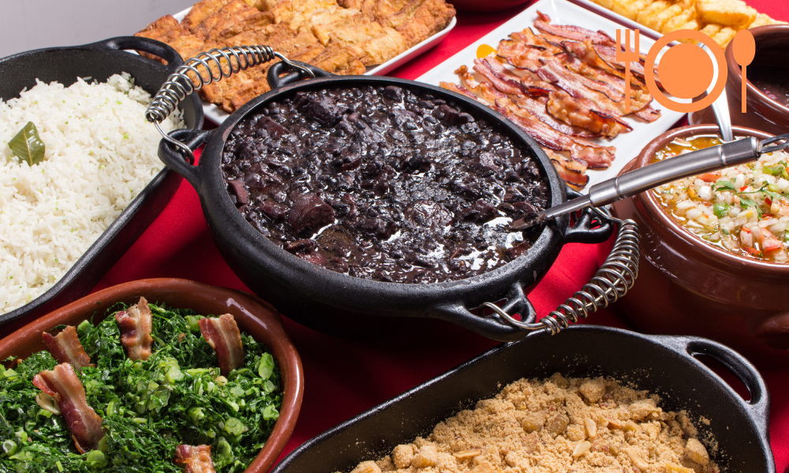

Brasil: Rio de Janeiro
Gastronomia
La comida típica de Río de Janeiro es una muestra más de la riqueza de la cultura carioca, porque su gastronomía es más que sólo una forma de comer o cocinar.
La gastronomía de Río de Janeiro es producto de una gran riqueza de materias primas pero, lo más importante, de la combinación de las influencias culinarias de culturas tan distintas como la portuguesa y las africanas, que han dado forma a lo que hoy conocemos como Brasil. El resultado es una comida típica llena de intensos sabores.
Donde comer en rio de Janeiro... Ver mas aqui!
